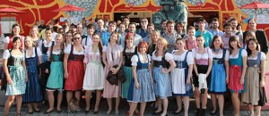

Wieder dahoam – Bericht zur 1. Walzstation
Die erste Walzstation liegt hinter mir – Zeit für einen Bericht
Natürlich war ich gespannt, wie sich der erste Tag bei InterNations wohl anfühlen würde, welche Kollegen ich kennenlernen würde und wie überhaupt die Begrüßung ausfallen würde. Bayerisch zünftig oder international abtastend? Da stand ich nun am Montagmorgen in der Teamlodge und wurde von unterschiedlichen Mitarbeitern sehr freundlich begrüßt. Bei InterNations findet jeden Montag ein Teamfrühstück statt. Eine sehr gute Idee, um gemeinsam in die Woche zu starten!
Neben mir wurden noch drei neue Mitarbeiter vorgestellt. Und Sie können sich denken, dass alle halb so alt waren wie ich ;-).

Nach dem Teamfrühstück ging es für mich weiter mit einem Gespräch mit dem Geschäftsführer Malte Zeeck zur Gestaltung der Woche. Ich wurde herumgeführt und erkannte sofort, dass es Malte auch um den Wohlfühlfaktor bei der Arbeit geht: Auf jeder Etage eine gut ausgestattete Küche, Kaffee und Tee für jeden, zwei Mal in der Woche Obst – geht es den Mitarbeitern gut, leisten sie auch hervorragende Arbeit. Mein erster Einsatz sollte im Bereich Buchhaltung erfolgen. Peter, aus Irland stammend, erwartete mich schon gespannt. Es ging also direkt an die Arbeit für mich. Erster Eindruck: Mein Gastgeber war zu meinem Einstieg sehr gut organisiert.
Im Laufe des ersten Tages bestätigte sich das, was ich von anderen erfolgreichen Start-Ups bereits kenne: Die Optimierung und Modernisierung der internen Organisation kann mit dem rasanten Wachstum des Unternehmens nicht mithalten, bleibt regelrecht auf der Strecke. Natürlich steht im Vordergrund die Kundengewinnung, aber ich kann nur immer wieder darauf hinweisen, das Interne nicht aus den Augen zu verlieren. Dies bildet immer noch das Rückgrat eines Unternehmens (u.a. Human Resources und Buchhaltung) und muss stark bleiben. Dazu müssen ebenso die Mitarbeiter dieser Bereiche unterstützt werden, damit sie aufgrund der Lasten durch äußeres Wachstum nicht geschwächt werden.
Peter aus Irland, noch recht neu bei InterNations, hatte sich schnell eingearbeitet, konnte aber verständlicherweise nicht gleich Prozesse ändern, während er das Unternehmen und dessen Abläufe kennenlernen musste. Zuerst analysierten wir die Abläufe in seiner Abteilung. Auch wenn die Buchhaltung sehr sorgfältig gehandhabt wird, erfolgt dies immer noch mit sehr viel Papier. Auf die althergebrachte Art und Weise werden Dokumente ausgedruckt und kopiert. Peters Bereitschaft, sich auf einen neuen Weg einzulassen, war mehr als spürbar. So gelang es uns gemeinsam, innerhalb von nur drei Tagen alle Voraussetzungen für eine zukünftige nahezu papierlose Buchhaltung zu schaffen. Von Anfang an bezog ich Dritte mit ein, wie zum Beispiel die Steuerberaterin, um auch gesetzliche Vorschriften für die Prozessumstellung ein zu beziehen. Diese freute sich übrigens sehr, dass noch einer ihrer Mandanten endlich auf ein „modernes“ Buchhaltungssystem umstellen möchte. (Wobei ich mich fragte, warum sie ihrem Mandanten das nicht längst von sich aus vorgeschlagen hatte? Soviel Beratung sollte doch möglich sein, oder?!)
Das Einscannen von Belegen, Online-Einstellen dieser, Abschaffen von Rechnungskopien und der Wegfall des Hin- und Herschickens dicker Ordner – auch wenn Peter die neuen Abläufe erlernen muss, freut auch er sich schon auf die Zeitersparnis bei seiner täglichen Arbeit. Nicht zu vergessen, wie viel früher zukünftig die Umsatzsteuer „gezogen“ werden kann. Das alles kann ich als Meilenstein in der Buchhaltung von InterNations bezeichnen!
Etwas möchte ich noch anmerken: Ich staune immer wieder über die Unsicherheit zum Thema „Aufbewahrungspflicht“. Warum werden die zuständigen Fachleute, wie eben Steuerberater, nicht rechtzeitig dazu befragt? Stattdessen wird viel zu viel in den Unternehmen aufbewahrt, vor allem Massen an Dokumenten und Ordnern.
Meine zweite Station war die Personalabteilung. Die verantwortliche Kollegin, Christa Fellner, hatte sich sehr gut vorbereitet und verschiedene Fragen gesammelt. Auch sie begegnete mir offen und neugierig. Zu ihrem dringlichsten Thema „Ablage und Archivierung“ definierten wir Prozesse und Regeln, um die unnötige Produktion von Papier zukünftig verringern zu können. Mein Ansinnen betrifft nicht nur das Papier an sich, sondern vor allem die Kosten und die Zeit, die mit dessen Anwendung und Weiterverarbeitung einhergehen. Zahlreiche kleinere Prozesse konnten wir sofort optimieren bzw. ändern, neue Übersichtstabellen wurden angelegt, die Ablage in kürzerer Zeit organisiert. Alles in allem konnte ich als Professional Organizer auch hier meiner Aufgabe „besseres Zeitmanagement“ erfolgreich nachkommen.
Nachdem Frau Fellner und ich uns schnell als Team eingearbeitet hatten, konnte ich auch auf ihre teils schwierige Situation als HR-Verantwortliche mit gleichzeitig anderen, abteilungsübergreifenden Aufgaben eingehen. Auch wenn es ihr Anliegen ist, für alle Mitarbeiter ein offenes Ohr zu haben, stößt sie natürlich bei 60 Leuten inzwischen an ihre Grenzen. Die Tür immer offen zu halten hieße ständige Störungen der eigenen Arbeit und damit Zeitverlust beim Erledigen der anstehenden Aufgaben. Auch bei einem guten Selbstmanagement leiden „große“ Aufgaben zwangsweise. Beispielhaft führte Frau Fellner hier das Erstellen eines neuen Personalentwicklungskonzeptes an.
Folgende Lösung habe ich mit ihr erarbeitet, damit sie mehr ungestörte Arbeitszeit gewinnt:
- Frau Fellner wird eine feste Sprechzeit für Mitarbeiter einführen.
- Für ihre konzeptionelle Arbeit wird täglich 8.00 bis 10.00 Uhr geblockt.
- Ab mittags widmet sie sich dem Tagesgeschäft.
Natürlich muss sie diese Tagesstruktur mit der Geschäftsführung abstimmen, aber auch die wird verstehen, dass der HR-Verantwortlichen so mehr Zeit zur Verfügung stehen wird, an erfolgsentscheidenden Themen zu arbeiten. Und letztendlich wird Frau Fellner sich jeden Tag zufriedener fühlen, da ihre Arbeit ungestört erledigt werden kann, statt sich durch äußere Einflüsse durch den Tag hetzen zu lassen. Und mich macht es zufrieden, dass sie noch weitere Ideen bekommen hat, um ihren vollen Arbeitsalltag noch besser zu organisieren.
Mitte der Woche schien der Start-Up Habitus wieder erfreulich durch: Das millionste Mitglied bei InterNations
wurde ganz unkompliziert gemeinsam bei Pizza gefeiert, und natürlich gab es eine Dankesrede vom Chef.
Und schon war die Woche in München rum und damit auch meine erste Walzstation. Bei der Feedback-Runde zwischen Malte Zeeck, Christa Fellner und mir erntete ich dickes Lob und Dankeschön und wir waren uns einig, dass diese Woche für alle Beteiligten eine lohnende Woche war.
Fazit aus meiner Sicht
Ich habe mit InterNations ein junges Unternehmen mit einem sehr jungen Team erlebt, das trotz des großen Erfolges absolut offen für Neues und Verbesserungen ist. Benötigte Informationen und weiterführende Gespräche erhielt ich unkompliziert und zeitnah, trotz der vollen Terminpläne aller Verantwortlichen.
Zukünftig werde ich Mitarbeitern noch mehr klar machen, wie sehr ich ihre Arbeit, in der ich keine Kompetenz mitbringe, auch als Außenstehender schätze, statt gleich in die Kritik und Optimierung ihrer Arbeitsprozesse einzusteigen. Diese Gratwanderung bei Kunden kann ich für mich selbst verbessern und durchaus noch ein wenig diplomatischer werden!
Weitere Artikel

Meine letzte Walzstation – schee war’s
Der Organizer verabschiedet sich von einer insgesamt wunderbaren Walz. Meine letzte Walzwoche liegt hinter mir und die Eindrücke zu Vaude in Tettnang klingen noch nach. Mein erster Eindruck Schon am ersten Tag traf ich auf eine …

Meine Wanderschaft nähert sich dem Ende
Sie erinnern sich noch? Drei Walzstationen habe ich auf meiner Wanderschaft seit Herbst 2013 absolviert, nun folgt nächste Woche die 4. und damit auch letzte. Noch einmal zur Erinnerung: Besonders erfreulich finde ich die …